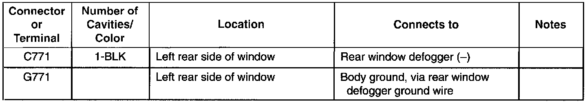
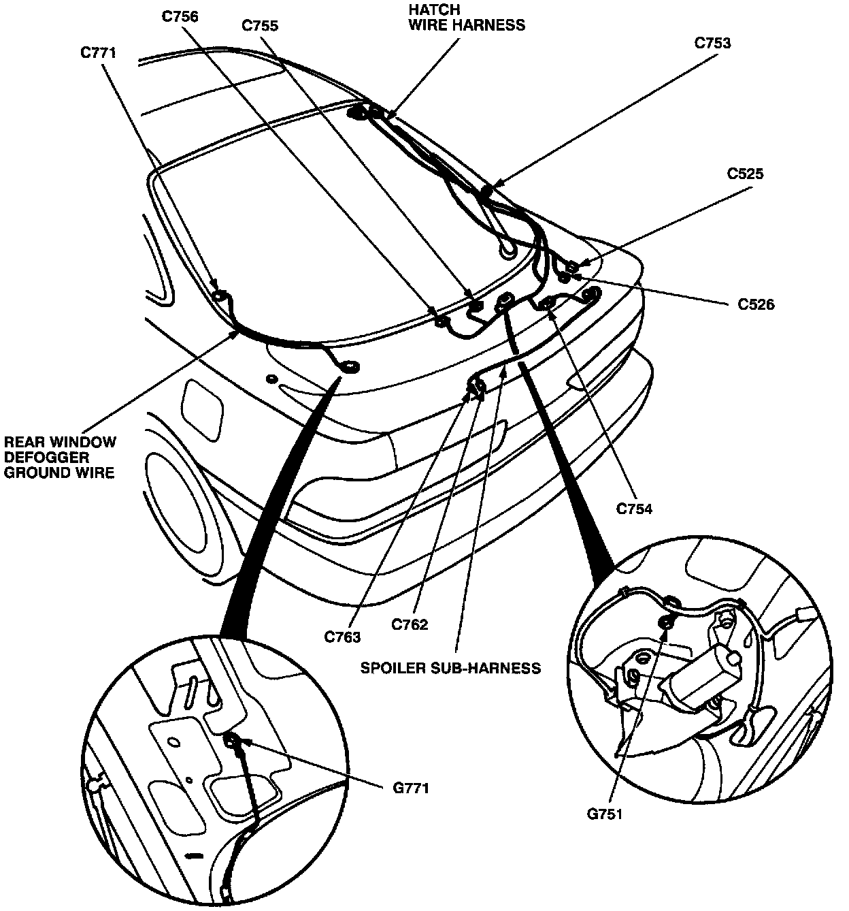

Operation CHARM
: Car repair manuals for everyone.
Home
>>
Acura
>>
1995
>>
Integra (GS-R) L4-1797cc 1.8L DOHC (VTEC)
>>
Repair and Diagnosis
>>
Diagrams
>>
Harness
>>
Rear Window Defogger Ground Wire
Rear Window Defogger Ground Wire
Rear Window Defogger Ground Wire (Hatchback):

Connector Identification And Wire Harness Routing:
